EE333000 - Group 4 Project
Zhichuan Tan, Churan Ruan, David Altamirano, Kelvin Ma
Contents
Loading and transforming the Data
All the data here is from the NIST Chemistry WebBook which you can find here: https://webbook.nist.gov/
%------------------------------------------------------------------------- set(0,'DefaultLegendAutoUpdate','off') H2O_data = jcampread(fullfile("NIST_Spectrum_Data", "H2O.jdx")); % Vapor CH4_data = jcampread(fullfile("NIST_Spectrum_Data", "CH4.jdx")); % Methane O3_data = jcampread(fullfile("NIST_Spectrum_Data", "O3.jdx")); % Ozone CO2_data = jcampread(fullfile("NIST_Spectrum_Data", "CO2.jdx")); % CO2 % convert the x axis data from wavenumber (cm^-1) to wavelength (in mm) H2O_data.Blocks.XData = (10E3)./H2O_data.Blocks.XData; CH4_data.Blocks.XData = (10E3)./CH4_data.Blocks.XData; O3_data.Blocks.XData = (10E3)./O3_data.Blocks.XData; CO2_data.Blocks.XData = (10E3)./CO2_data.Blocks.XData; % The dataset provided by NIST for Ozone is inaccurate, but for the sake of % this demostration, we will perform some fixes on the data. % data for Ozone used transmittance, y axis must be converted to absorbance O3_data.Blocks.YData = -1*log10(O3_data.Blocks.YData); % The O2 data also has a different x axis, since it comes from a different % database. As such, we will find the closest matching element to the % corresponding x axis value of the H2O data (H2O, CH4 and CO2 all have the % same X axis) O3_YData = zeros(1, length(H2O_data.Blocks.XData)); idx = 1; for x = H2O_data.Blocks.XData differences = abs(O3_data.Blocks.XData - x); %find the diff in x values [~, min_diff_idx] = min(differences); %find index of closest value to x O3_YData(1, idx) = O3_data.Blocks.YData(min_diff_idx); idx = idx + 1; end O3_data.Blocks.XData = H2O_data.Blocks.XData; O3_data.Blocks.YData = O3_YData;
Visualizing the Data
Before we begin with LSF, let's quickly visualize the NIST IR Spectrums
hold on; grid on; plot(H2O_data.Blocks.XData, H2O_data.Blocks.YData); plot(CH4_data.Blocks.XData, CH4_data.Blocks.YData); plot(O3_data.Blocks.XData, O3_data.Blocks.YData); plot(CO2_data.Blocks.XData, CO2_data.Blocks.YData); xlim([min(H2O_data.Blocks.XData) max(H2O_data.Blocks.XData)]) ylim([0 1]); legend("H2O", "CH4", "O3", "CO2"); title("Spectra Data"); xlabel("wavelength(nm)"); ylabel("Absorbance");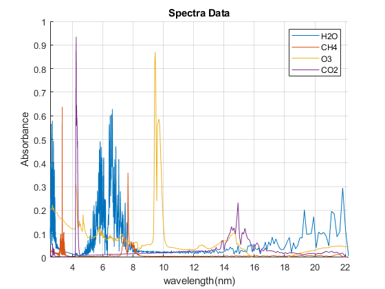
Generating total absorbance (no noise)
total_absorbance = zeros(1, length(H2O_data.Blocks.XData)); for idx = 1:length(H2O_data.Blocks.XData) total_absorbance(idx) = max([O3_data.Blocks.YData(1, idx), ... H2O_data.Blocks.YData(1, idx), ... CO2_data.Blocks.YData(1, idx), ... CH4_data.Blocks.YData(1, idx)]); end % total_absorbance(total_absorbance > 1) = 1; plot(CO2_data.Blocks.XData, total_absorbance, 'linewidth', 2); legend("H2O", "CH4", "O3", "CO2", "Total Absorbance"); total_absorbance = transpose(total_absorbance);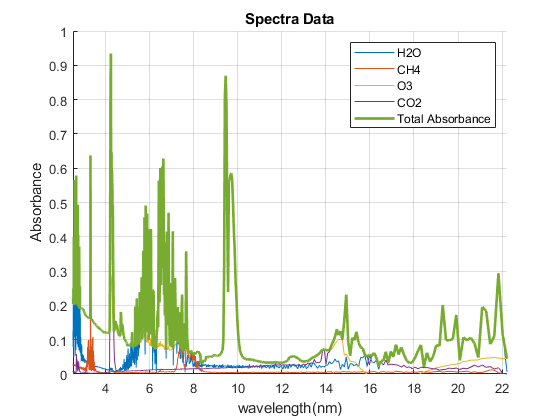
Linear Least Squares Fitting (without noise)
A = zeros(length(H2O_data.Blocks.YData), 4); A(:, 1) = H2O_data.Blocks.YData; A(:, 2) = CO2_data.Blocks.YData; A(:, 3) = CH4_data.Blocks.YData; A(:, 4) = O3_data.Blocks.YData; A_T = transpose(A); ATA = (A_T*A); AT_b = A_T * total_absorbance; concentrations = inv(ATA) * AT_b; calculated_absorption = ((concentrations(1)* H2O_data.Blocks.YData) + ... (concentrations(2)* CO2_data.Blocks.YData) + ... (concentrations(3)* CH4_data.Blocks.YData) + ... (concentrations(4)* O3_data.Blocks.YData)); hold off; plot(H2O_data.Blocks.XData, total_absorbance) hold on; grid on; plot(H2O_data.Blocks.XData, calculated_absorption) xlim([min(H2O_data.Blocks.XData) max(H2O_data.Blocks.XData)]) ylim([0 max(total_absorbance)+0.5]); title("Actual absorbance vs. Calculated absorbance"); legend("Actual", "Estimated");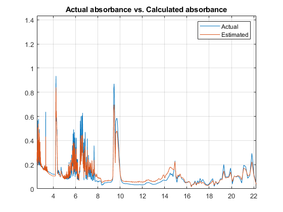
Introducing noise
In this part, we will run 100 trails - each time generating more noise. we will then record the concetration of each of our 4 compounds throughout the trials and plot them. the noise will increase by 0.005 with each trial Essentially, what we are doing is creating a total_absorbance with the following equation:
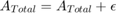
where 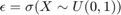
and 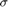 represents the maximum amplitude of our noise. hence, our noise will be defined by a uniform distribution 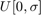.
sigma = 0; % max noise amplitude trials = 1:100; % number of trials H2O_concentrations = zeros(max(trials), 1); CO2_concentrations = zeros(max(trials), 1); CH4_concentrations = zeros(max(trials), 1); O3_concentrations = zeros(max(trials), 1); animation(max(trials)) = struct('cdata',[],'colormap',[]); epsilons = zeros(max(trials), 1); for i = trials % first step in each trial: generate the total absorbance with the % current level of noise epsilon = sigma * rand(1,1); total_absorbance = zeros(length(H2O_data.Blocks.XData), 1); for idx = 1:length(H2O_data.Blocks.XData) total_absorbance(idx) = max([O3_data.Blocks.YData(1, idx), ... H2O_data.Blocks.YData(1, idx), ... CO2_data.Blocks.YData(1, idx), ... CH4_data.Blocks.YData(1, idx)]) + epsilon; end sigma = sigma + 0.005; % next, use least square fitting again A_T = transpose(A); ATA = (A_T*A); AT_b = A_T * total_absorbance; concentrations = inv(ATA) * AT_b; % record the concentrations and noise used H2O_concentrations(i) = concentrations(1); CO2_concentrations(i) = concentrations(2); CH4_concentrations(i) = concentrations(3); O3_concentrations(i) = concentrations(4); epsilons(i) = epsilon; % create an animation! % this show after publishing - but we will do a live demo clf plot(trials(1:i), H2O_concentrations(1:i)); hold on; grid on; plot(trials(1:i), CO2_concentrations(1:i)); plot(trials(1:i), CH4_concentrations(1:i)); plot(trials(1:i), O3_concentrations(1:i)); ylim([0 3]); xlim([1 max(trials)]); legend("H2O", "CO2", "CH4", "O3"); current_title = sprintf("Trial #%d, sigma = %0.4f, epsilon = %0.4f",... i, sigma, epsilon); title(current_title); drawnow; % slow it down with 2 frames each animation(i) = getframe(gcf); animation(i) = getframe(gcf); % pause(0.25); end v = VideoWriter('concentration_animation.gif'); open(v); writeVideo(v, animation); close(v);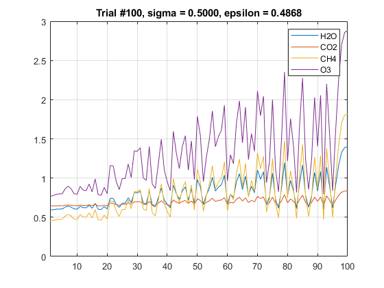
Analysis of Concentration vs. Noise
for the sake of this example, we want to find out when our model begins to "fail". Let's say we want to find when our concentrations begin to have an uncertainty of +/- 20% from the original value (estimated with 0 noise) Since a single data point exceeding our uncertainty limit isn't too statistically significant - we chose to do a moving average of the previous 10 data points. Once the absolute value of this moving average is above +/-20% - we can say that our fit is no longer works.
meaning_avg_window = 10; % H2O figure; plot(trials, H2O_concentrations); hold on; H2O_con_movingavg = movmean(H2O_concentrations, meaning_avg_window); plot(trials, H2O_con_movingavg); legend('H2O Concentrations', 'H2O Concentration moving mean'); yline(H2O_concentrations(1) + 0.2 * H2O_concentrations(1)); yline(H2O_concentrations(1) - 0.2 * H2O_concentrations(1)); xlim([1 max(trials)]); ylim([0, 3]); legend('H2O Concentrations', 'H2O Concentration moving mean'); %find out where the moving mean exceeds 20% uncertainty for i = 1:max(trials) if H2O_con_movingavg(i) > H2O_concentrations(1) + 0.2 * H2O_concentrations(1) xline(i); fprintf("H2O - trial #%d, epilson = %0.4f\n", i, epsilons(i)); textbox = sprintf("trial #%d, epilson = %0.4f\n", i, epsilons(i)); text(i+0.5, H2O_concentrations(i)+0.25, textbox); break; end end % CO2 figure; plot(trials, CO2_concentrations); hold on; CO2_con_movingavg = movmean(CO2_concentrations, meaning_avg_window); plot(trials, CO2_con_movingavg); yline(CO2_concentrations(1) + 0.2 * CO2_concentrations(1)); yline(CO2_concentrations(1) - 0.2 * CO2_concentrations(1)); xlim([1 max(trials)]); ylim([0, 3]); legend('CO2 Concentrations', 'CO2 Concentration moving mean'); %find out where the moving mean exceeds 20% uncertainty for i = 1:max(trials) if CO2_con_movingavg(i) > CO2_concentrations(1) + 0.2 * CO2_concentrations(1) xline(i); fprintf("CO2 - trial #%d, epilson = %0.4f\n", i, epsilons(i)); textbox = sprintf("trial #%d, epilson = %0.4f\n", i, epsilons(i)); text(i+0.5, CO2_concentrations(i)+0.25, textbox); break; end end % CH4 figure; plot(trials, CH4_concentrations); hold on; CH4_con_movingavg = movmean(CH4_concentrations, meaning_avg_window); plot(trials, CH4_con_movingavg); yline(CH4_concentrations(1) + 0.2 * CH4_concentrations(1)); yline(CH4_concentrations(1) - 0.2 * CH4_concentrations(1)); xlim([1 max(trials)]); ylim([0, 3]); legend('CH4 Concentrations', 'CH4 Concentration moving mean'); %find out where the moving mean exceeds 20% uncertainty for i = 1:max(trials) if CH4_con_movingavg(i) > CH4_concentrations(1) + 0.2 * CH4_concentrations(1) xline(i); fprintf("CH4 - trial #%d, epilson = %0.4f\n", i, epsilons(i)); textbox = sprintf("trial #%d, epilson = %0.4f\n", i, epsilons(i)); text(i+0.5, CH4_concentrations(i)+0.25, textbox); break; end end % O3 figure; plot(trials, O3_concentrations); hold on; O3_con_movingavg = movmean(O3_concentrations, meaning_avg_window); plot(trials, O3_con_movingavg); yline(O3_concentrations(1) + 0.2 * O3_concentrations(1)); yline(O3_concentrations(1) - 0.2 * O3_concentrations(1)); xlim([1 max(trials)]); ylim([0, 3]); legend('O3 Concentrations', 'O3 Concentration moving mean'); %find out where the moving mean exceeds 20% uncertainty for i = 1:max(trials) if O3_con_movingavg(i) > O3_concentrations(1) + 0.2 * O3_concentrations(1) xline(i); fprintf("O3 - trial #%d, epilson = %0.4f\n", i, epsilons(i)); textbox = sprintf("trial #%d, epilson = %0.4f\n", i, epsilons(i)); text(i+0.5, O3_concentrations(i)+0.25, textbox); break; end end
H2O - trial #26, epilson = 0.0520 CO2 - trial #100, epilson = 0.4868 CH4 - trial #18, epilson = 0.0029 O3 - trial #19, epilson = 0.0258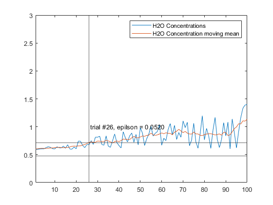 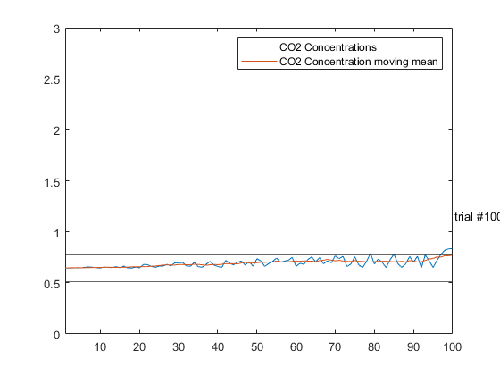 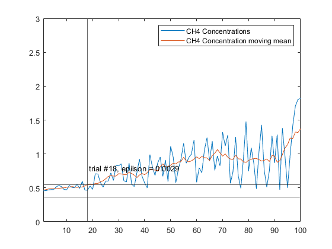 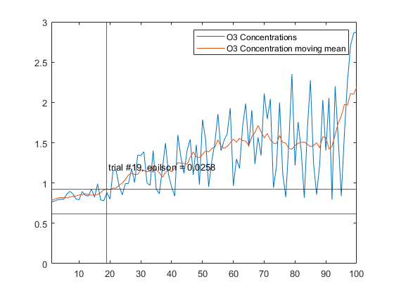